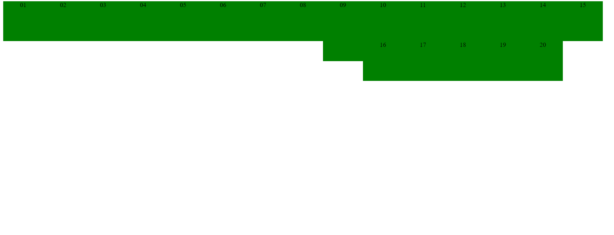

Opdracht 1
Voor welke waarden worden de opgegeven width en height genegeerd?
Dit gebeurt wanneer de display property voor .area op inline ingesteld is.
Voor welke waarden worden de elementen als woorden op een pagina gezet?
Dit kan met inline of inline-block.
Opdracht 2
Vanwaar komen de lege ruimtes tussen blokken die naast elkaar staan?
Dit komt doordat alle div-elementen onder elkaar staan in het htmlbestand (enter)
Opdracht 3
Waarom staat de tekst in de blokken horizontaal gecentreerd?
In de CSS-file kan je vinden dat text-align: center staat voor het div-element.
Ga na dat vertical-align:middle er niet voor zorgt dat de tekst verticaal gecentreerd wordt. Wat doet vertical-align dan wel?
Dit zorgt ervoor dat de blokken op zich gecentreerd worden.
Zoek op google of er een simpele manier is om tekst verticaal te centreren in een element.
1) Wat is de ‘simpele’ manier om een één enkele regel tekst verticaal te centreren? (tip:line-height)
2) Welke truc wordt vaak gebruikt om meerdere regels verticaal te centreren? (tip: table cell)
1) de line-height van het child element dezelfde waarde geeft als de hoogte van het parent element
2) display: table-cell; vertical-align: middle
In 'styles.css' staan twee verschillende CSS regels die de height instellen van een element met
class="area tall". Waarom krijgt de regel voor class 'tall' voorrang?
Dit komt doordat tall later in het css bestand voorkomt en gedefinieerd wordt.
Opdracht 4
Floaty class: links in hun regel en geen grote ruimte tussen 8 en 10
Floaty class: 12 en 14 niet altijd netjes naast elkaar en geen tussenruimte tussen groen en rood
Break class
Opdracht 5
Naast element 9 staan er altijd 2 'regels' blokken

Element 13 - break class